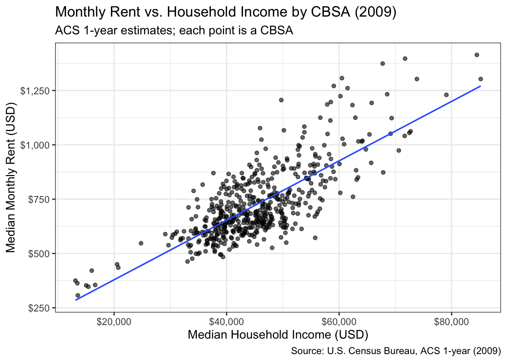
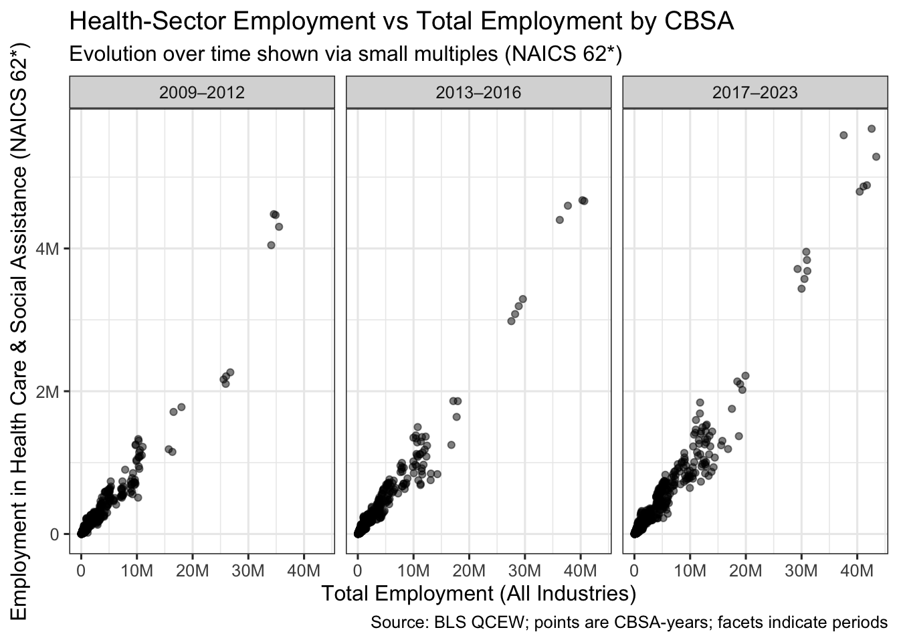
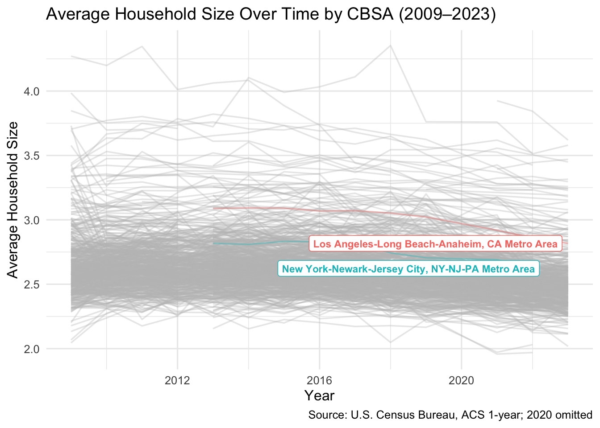
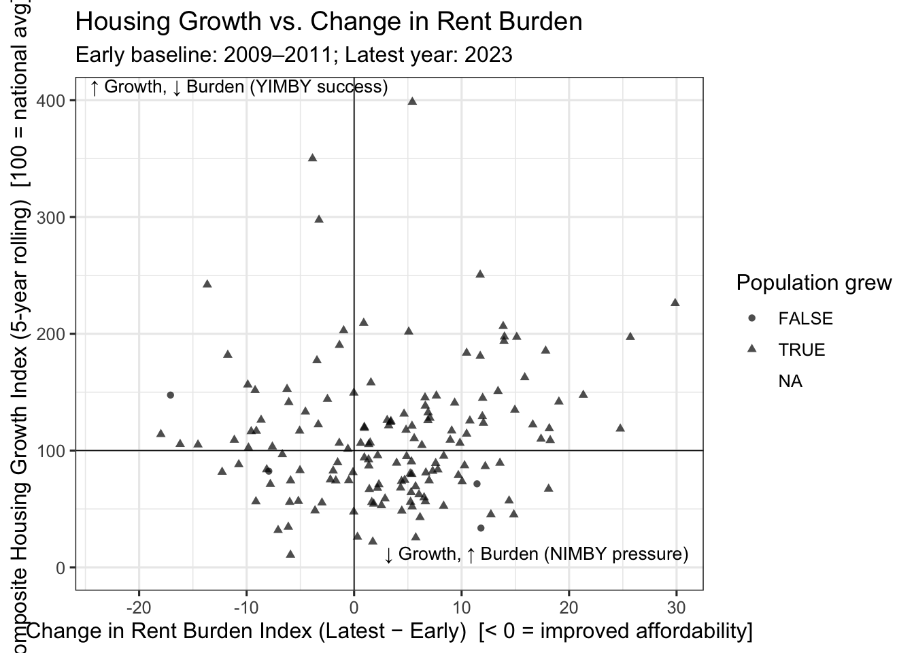
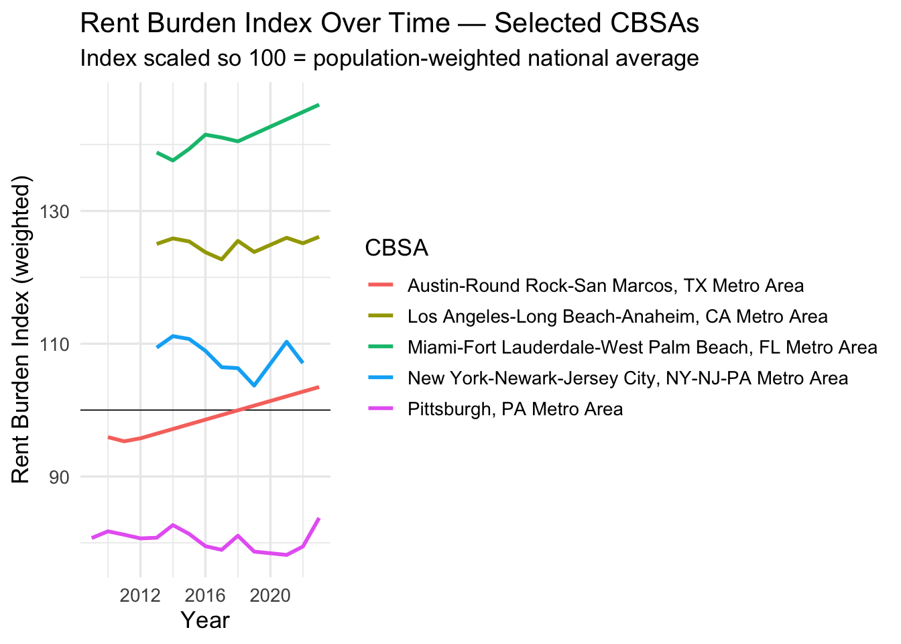

Mini Project 02: Making Backyards Affordable for All
Author
Dolma Sherpa
Introduction
Background on housing affordability, motivation, and data sources (ACS, BLS).
Task 1 – Data Acquisition
The following chunk contains all the data import code provided and is folded for organization.
Show code
#Data importif(!dir.exists(file.path("data", "mp02"))){dir.create(file.path("data", "mp02"), showWarnings=FALSE, recursive=TRUE)}library <-function(pkg){## Mask base::library() to automatically install packages if needed## Masking is important here so downlit picks up packages and links## to documentation pkg <-as.character(substitute(pkg))options(repos =c(CRAN ="https://cloud.r-project.org"))if(!require(pkg, character.only=TRUE, quietly=TRUE)) install.packages(pkg)stopifnot(require(pkg, character.only=TRUE, quietly=TRUE))}library(tidyverse)library(glue)library(readxl)library(tidycensus)get_acs_all_years <-function(variable, geography="cbsa",start_year=2009, end_year=2023){ fname <-glue("{variable}_{geography}_{start_year}_{end_year}.csv") fname <-file.path("data", "mp02", fname)if(!file.exists(fname)){ YEARS <-seq(start_year, end_year) YEARS <- YEARS[YEARS !=2020] # Drop 2020 - No survey (covid) ALL_DATA <-map(YEARS, function(yy){ tidycensus::get_acs(geography, variable, year=yy, survey="acs1") |>mutate(year=yy) |>select(-moe, -variable) |>rename(!!variable := estimate) }) |>bind_rows()write_csv(ALL_DATA, fname) }read_csv(fname, show_col_types=FALSE)}# Household income (12 month)INCOME <-get_acs_all_years("B19013_001") |>rename(household_income = B19013_001)# Monthly rentRENT <-get_acs_all_years("B25064_001") |>rename(monthly_rent = B25064_001)# Total populationPOPULATION <-get_acs_all_years("B01003_001") |>rename(population = B01003_001)# Total number of householdsHOUSEHOLDS <-get_acs_all_years("B11001_001") |>rename(households = B11001_001)# Number of new housing units built each yearget_building_permits <-function(start_year =2009, end_year =2023){fname <-glue("housing_units_{start_year}_{end_year}.csv")fname <-file.path("data", "mp02", fname)if(!file.exists(fname)){ HISTORICAL_YEARS <-seq(start_year, 2018) HISTORICAL_DATA <-map(HISTORICAL_YEARS, function(yy){ historical_url <-glue("https://www.census.gov/construction/bps/txt/tb3u{yy}.txt") LINES <-readLines(historical_url)[-c(1:11)] CBSA_LINES <-str_detect(LINES, "^[[:digit:]]") CBSA <-as.integer(str_sub(LINES[CBSA_LINES], 5, 10)) PERMIT_LINES <-str_detect(str_sub(LINES, 48, 53), "[[:digit:]]") PERMITS <-as.integer(str_sub(LINES[PERMIT_LINES], 48, 53))data_frame(CBSA = CBSA,new_housing_units_permitted = PERMITS, year = yy) }) |>bind_rows() CURRENT_YEARS <-seq(2019, end_year) CURRENT_DATA <-map(CURRENT_YEARS, function(yy){ current_url <-glue("https://www.census.gov/construction/bps/xls/msaannual_{yy}99.xls") temp <-tempfile()download.file(current_url, destfile = temp, mode="wb") fallback <-function(.f1, .f2){function(...){tryCatch(.f1(...), error=function(e) .f2(...)) } } reader <-fallback(read_xlsx, read_xls)reader(temp, skip=5) |>na.omit() |>select(CBSA, Total) |>mutate(year = yy) |>rename(new_housing_units_permitted = Total) }) |>bind_rows() ALL_DATA <-rbind(HISTORICAL_DATA, CURRENT_DATA)write_csv(ALL_DATA, fname)}read_csv(fname, show_col_types=FALSE)}PERMITS <-get_building_permits()# Latest NAICS data schema library(httr2)library(rvest)get_bls_industry_codes <-function(){ fname <-file.path("data", "mp02", "bls_industry_codes.csv")library(dplyr)library(tidyr)library(readr)if(!file.exists(fname)){ resp <-request("https://www.bls.gov") |>req_url_path("cew", "classifications", "industry", "industry-titles.htm") |>req_headers(`User-Agent`="Mozilla/5.0 (Macintosh; Intel Mac OS X 10.15; rv:143.0) Gecko/20100101 Firefox/143.0") |>req_error(is_error = \(resp) FALSE) |>req_perform()resp_check_status(resp) naics_table <-resp_body_html(resp) |>html_element("#naics_titles") |>html_table() |>mutate(title =str_trim(str_remove(str_remove(`Industry Title`, Code), "NAICS"))) |>select(-`Industry Title`) |>mutate(depth =if_else(nchar(Code) <=5, nchar(Code) -1, NA)) |>filter(!is.na(depth))# These were looked up manually on bls.gov after finding # they were presented as ranges. Since there are only three# it was easier to manually handle than to special-case everything else naics_missing <- tibble::tribble(~Code, ~title, ~depth, "31", "Manufacturing", 1,"32", "Manufacturing", 1,"33", "Manufacturing", 1,"44", "Retail", 1, "45", "Retail", 1,"48", "Transportation and Warehousing", 1, "49", "Transportation and Warehousing", 1 ) naics_table <-bind_rows(naics_table, naics_missing) naics_table <- naics_table |>filter(depth ==4) |>rename(level4_title=title) |>mutate(level1_code =str_sub(Code, end=2), level2_code =str_sub(Code, end=3), level3_code =str_sub(Code, end=4)) |>left_join(naics_table, join_by(level1_code == Code)) |>rename(level1_title=title) |>left_join(naics_table, join_by(level2_code == Code)) |>rename(level2_title=title) |>left_join(naics_table, join_by(level3_code == Code)) |>rename(level3_title=title) |>select(-starts_with("depth")) |>rename(level4_code = Code) |>select(level1_title, level2_title, level3_title, level4_title, level1_code, level2_code, level3_code, level4_code) |>drop_na() |>mutate(across(contains("code"), as.integer))write_csv(naics_table, fname) }read_csv(fname, show_col_types=FALSE)}INDUSTRY_CODES <-get_bls_industry_codes()# BLS Quarterly Census of Employment and Wageslibrary(httr2)library(rvest)get_bls_qcew_annual_averages <-function(start_year=2009, end_year=2023){ fname <-glue("bls_qcew_{start_year}_{end_year}.csv.gz") fname <-file.path("data", "mp02", fname) YEARS <-seq(start_year, end_year) YEARS <- YEARS[YEARS !=2020] # Drop Covid year to match ACSif(!file.exists(fname)){ ALL_DATA <-map(YEARS, .progress=TRUE, possibly(function(yy){ fname_inner <-file.path("data", "mp02", glue("{yy}_qcew_annual_singlefile.zip"))if(!file.exists(fname_inner)){request("https://www.bls.gov") |>req_url_path("cew", "data", "files", yy, "csv",glue("{yy}_annual_singlefile.zip")) |>req_headers(`User-Agent`="Mozilla/5.0 (Macintosh; Intel Mac OS X 10.15; rv:143.0) Gecko/20100101 Firefox/143.0") |>req_retry(max_tries=5) |>req_perform(fname_inner) }if(file.info(fname_inner)$size <755e5){warning(sQuote(fname_inner), "appears corrupted. Please delete and retry this step.") }read_csv(fname_inner, show_col_types=FALSE) |>mutate(YEAR = yy) |>select(area_fips, industry_code, annual_avg_emplvl, total_annual_wages, YEAR) |>filter(nchar(industry_code) <=5, str_starts(area_fips, "C")) |>filter(str_detect(industry_code, "-", negate=TRUE)) |>mutate(FIPS = area_fips, INDUSTRY =as.integer(industry_code), EMPLOYMENT =as.integer(annual_avg_emplvl), TOTAL_WAGES = total_annual_wages) |>select(-area_fips, -industry_code, -annual_avg_emplvl, -total_annual_wages) |># 10 is a special value: "all industries" , so omitfilter(INDUSTRY !=10) |>mutate(AVG_WAGE = TOTAL_WAGES / EMPLOYMENT) })) |>bind_rows()write_csv(ALL_DATA, fname) } ALL_DATA <-read_csv(fname, show_col_types=FALSE) ALL_DATA_YEARS <-unique(ALL_DATA$YEAR) YEARS_DIFF <-setdiff(YEARS, ALL_DATA_YEARS)if(length(YEARS_DIFF) >0){stop("Download failed for the following years: ", YEARS_DIFF, ". Please delete intermediate files and try again.") } ALL_DATA}WAGES <-get_bls_qcew_annual_averages()
Pre-Processing
Firstly, examined the structure of six datasets (households, income, rent, population, building permits, and wages) to understand what information each contains.
Then standardized all column names to lowercase and ensured the datasets use consistent location identifiers so they can be combined and compared in later analysis.
Show code
# ---- 1. Explore Loaded Data ----glimpse(HOUSEHOLDS)
Please find all answers and code snippets below. Some are 2 parts while oters are single part.
Q1. Which CBSA (by name) permitted the largest number of new housing units in the decade from 2010 to 2019 (inclusive)?
Houston–The Woodlands–Sugar Land, TX permitted the most new housing units during the decade. This highlights Houston’s long-standing permissive zoning and its ability to accommodate strong population inflows.
Show code
permits_decade <- PERMITS %>%filter(year >=2010, year <=2019) %>%group_by(geoid) %>%summarise(total_permits_2010_2019 =sum(new_housing_units_permitted, na.rm =TRUE)) %>%arrange(desc(total_permits_2010_2019)) %>%left_join(select(HOUSEHOLDS, geoid, name), by ="geoid")head(permits_decade, 5)
Q2. In what year did Albuquerque, NM (CBSA Number 10740) permit the most new housing units?
Albuquerque, NM recorded its highest number of new permits in 2021. The post-pandemic surge suggests short-term recovery rather than sustained, long-run growth.
Show code
albuquerque_peak <- PERMITS %>%filter(geoid ==10740, year !=2020) %>%# exclude 2020 due to COVID data gapgroup_by(year) %>%summarise(total_permits =sum(new_housing_units_permitted, na.rm =TRUE)) %>%arrange(desc(total_permits))head(albuquerque_peak, 3)
Q3. Which state (not CBSA) had the highest average individual income in 2015?
Washington, DC ranked highest in per-capita income, closely followed by Massachusetts. Concentrations of government and knowledge-based jobs continue to sustain above-average regional wages.
Show code
# ---- Task 2: Multi-Table Question 3 (part 1) ----# Computed total income per CBSA and prepare for state-level aggregationincome_state <- INCOME %>%filter(year ==2015) %>%# focus on 2015left_join(HOUSEHOLDS %>%filter(year ==2015), by =c("geoid", "name", "year")) %>%# align householdsmutate(total_income_cbsa = household_income * households) # weighted totalglimpse(income_state)
Q4. What is the last year in which the NYC CBSA had the most data scientists in the country?
New York City last led national employment in NAICS 5182 (data analytics) in 2015, before San Francisco overtook it. This shift illustrates how the nation’s tech-talent hub has migrated westward over the last decade.
Show code
# ---- Task 2: Multi-Table Question 4 (part 1) ----# Converted BLS FIPS codes (e.g., "C1074") to numeric GEOID format (e.g., 10740)WAGES <- WAGES %>%mutate(geoid_bls = fips %>%str_remove("C") %>%# remove the "C" prefixas.double() *10# multiply by 10 to match Census GEOID format )# ---- Task 2: Multi-Table Question 4 (part 2) ----# Identify when NYC last had the highest number of data scientists (NAICS 5182)data_scientists <- WAGES %>%filter(industry ==5182) %>%# focus on data science/analyticsgroup_by(geoid_bls, year) %>%summarise(total_employment =sum(employment, na.rm =TRUE)) %>%arrange(year, desc(total_employment))# Find which CBSA leads per yearleaders_by_year <- data_scientists %>%group_by(year) %>%slice_max(total_employment, n =1)# Inspect NYC patternleaders_by_year %>%filter(geoid_bls ==35620) %>%arrange(desc(year)) %>%head(10)
Q5.What fraction of total wages in the NYC CBSA was earned by people employed in the finance and insurance industries (NAICS code 52)? In what year did this fraction peak?
Finance & Insurance wages peaked around 4.6 percent of total wages in 2014. The sector remains dominant but relatively stable, while employment growth has diversified into other industries.
The scatterplot shows a strong positive linear relationship between median household income and median monthly rent across CBSAs. Higher-income regions tend to have proportionally higher rents, reflecting income-linked housing markets. The regression line reinforces a consistent affordability gradient nationwide.
Show code
library(ggplot2)library(scales)library(dplyr)rent_income_2009 <- INCOME %>%filter(year ==2009) %>%select(geoid, name, household_income) %>%inner_join( RENT %>%filter(year ==2009) %>%select(geoid, monthly_rent),by ="geoid" ) %>%filter(!is.na(household_income), !is.na(monthly_rent))p_rent_income_2009 <-ggplot(rent_income_2009,aes(x = household_income, y = monthly_rent)) +geom_point(alpha =0.6) +geom_smooth(method ="lm", se =FALSE, linewidth =0.7) +labs(title ="Monthly Rent vs. Household Income by CBSA (2009)",subtitle ="ACS 1-year estimates; each point is a CBSA",x ="Median Household Income (USD)",y ="Median Monthly Rent (USD)",caption ="Source: U.S. Census Bureau, ACS 1-year (2009)" ) +scale_x_continuous(labels =label_dollar(accuracy =1)) +scale_y_continuous(labels =label_dollar(accuracy =1)) +theme_bw(base_size =12)print(p_rent_income_2009)

Plot 2 – Health-Sector Employment vs Total Employment (2009–2023)
Across all periods, CBSAs with larger overall workforces also support greater employment in health care and social assistance. The share of health-sector jobs rises steadily over time, indicating the sector’s expanding importance within regional labor markets. The facet panels reveal both growth and resilience in health-care employment, even through economic fluctuations.
Show code
library(ggplot2)library(scales)library(dplyr)library(stringr)# 1) Total employment per CBSA-year (all industries)total_emp <- WAGES %>%group_by(geoid_bls, year) %>%summarise(total_emp =sum(employment, na.rm =TRUE), .groups ="drop")# 2) Health sector (NAICS 62*) employment per CBSA-year# Including all industries whose NAICS code starts with "62" (62, 621, 622, 623, 624, ...)health_emp <- WAGES %>%mutate(industry_chr =as.character(industry)) %>%filter(str_starts(industry_chr, "62")) %>%group_by(geoid_bls, year) %>%summarise(health_emp =sum(employment, na.rm =TRUE), .groups ="drop")# 3) Joined and created coarse time periods to make evolution readableemp_df <- total_emp %>%inner_join(health_emp, by =c("geoid_bls", "year")) %>%filter(!is.na(total_emp), !is.na(health_emp)) %>%mutate(period =case_when( year <=2012~"2009–2012", year <=2016~"2013–2016",TRUE~"2017–2023" )) %>%mutate(period =factor(period, levels =c("2009–2012","2013–2016","2017–2023")))# 4) Final plot (small multiples to show evolution)p_emp_health <-ggplot(emp_df, aes(x = total_emp, y = health_emp)) +geom_point(alpha =0.5) +facet_wrap(~ period) +labs(title ="Health-Sector Employment vs Total Employment by CBSA",subtitle ="Evolution over time shown via small multiples (NAICS 62*)",x ="Total Employment (All Industries)",y ="Employment in Health Care & Social Assistance (NAICS 62*)",caption ="Source: BLS QCEW; points are CBSA-years; facets indicate periods" ) +scale_x_continuous(labels = scales::label_number(scale_cut = scales::cut_short_scale())) +scale_y_continuous(labels = scales::label_number(scale_cut = scales::cut_short_scale())) +theme_bw(base_size =12)print(p_emp_health)

Plot 3 – Average Household Size Over Time (2009–2023)
Most CBSAs maintain stable household sizes near 2.5–3 people, though minor variations persist across metro areas. Los Angeles shows slightly larger average households, while New York’s trend remains flatter and slightly lower. Overall, stability suggests slow demographic shifts despite population growth and housing pressures.
Show code
# Packageslibrary(ggplot2)library(dplyr)if (!requireNamespace("gghighlight", quietly =TRUE)) install.packages("gghighlight")library(gghighlight)# Compute average household size: population / householdshousehold_size <- POPULATION %>%select(geoid, name, year, population) %>%inner_join(HOUSEHOLDS %>%select(geoid, year, households),by =c("geoid", "year")) %>%mutate(avg_household_size = population / households) %>%filter(year >=2009, year !=2020) # omit COVID gap# Target CBSAs to highlighthighlight_targets <-c("New York-Newark-Jersey City, NY-NJ-PA Metro Area","Los Angeles-Long Beach-Anaheim, CA Metro Area")# Spaghetti plot with highlights and direct labelsp_household_size <-ggplot(household_size,aes(x = year, y = avg_household_size,group = name, color = name)) +geom_line(alpha =0.35, linewidth =0.6) +gghighlight(name %in% highlight_targets,label_key = name,use_direct_label =TRUE,label_params =list(size =3, fontface ="bold")) +labs(title ="Average Household Size Over Time by CBSA (2009–2023)",x ="Year",y ="Average Household Size",caption ="Source: U.S. Census Bureau, ACS 1-year; 2020 omitted" ) +theme_minimal(base_size =12) +theme(legend.position ="none")print(p_household_size)

Task 4: Rent Burden
Key Findings
To evaluate housing affordability, I developed a population-weighted Rent Burden Index that scales the rent-to-income ratio so that 100 represents the national weighted average. CBSAs with values below 100 spend proportionally less of their income on rent, while those above 100 face greater housing cost pressure.
In 2023, the least-burdened CBSAs, such as Albertville, AL Micro Area and Mount Airy, NC Micro Area, registered index values near 70, with rent-to-income ratios around 0.14 — meaning typical residents spent only 14 % of income on rent, well below the national benchmark. By contrast, the most-burdened CBSAs exceeded 130 on the index, underscoring how larger metros continue to struggle with sustained rent pressure even as smaller markets remain relatively affordable.
Show code
# ---- Task 4: Rent Burden Metric ----# 1) Joined RENT, INCOME, POPULATION rent_burden_weighted <- RENT %>%inner_join(INCOME, by =c("geoid", "name", "year")) %>%inner_join(POPULATION, by =c("geoid", "name", "year")) %>%filter(!is.na(monthly_rent), !is.na(household_income), household_income >0) %>%mutate(rent_to_income = (monthly_rent *12) / household_income )# 2) Population-weighted baseline (100 = national average)baseline_rent_ratio_pop <-with( rent_burden_weighted,weighted.mean(rent_to_income, w = population, na.rm =TRUE))# 3) Standardized index (weighted)rent_burden_weighted <- rent_burden_weighted %>%mutate(rent_burden_index_weighted = (rent_to_income / baseline_rent_ratio_pop) *100 )# 4) Compared to unweighted baseline if availableif (exists("baseline_rent_ratio")) { compare_baselines <-data.frame(baseline_unweighted = baseline_rent_ratio,baseline_weighted = baseline_rent_ratio_pop )print(compare_baselines)} else {message("Unweighted baseline not found in this session; skipping baseline comparison.")}# 5) Latest year weighted rankingslatest_year <-max(rent_burden_weighted$year, na.rm =TRUE)rent_burden_latest_weighted <- rent_burden_weighted %>%filter(year == latest_year) %>%distinct(name, .keep_all =TRUE) %>%# ensure one row per CBSAselect(name, rent_burden_index_weighted) %>%arrange(desc(rent_burden_index_weighted))top10_burdened_weighted <-head(rent_burden_latest_weighted, 10)bottom10_burdened_weighted <-tail(rent_burden_latest_weighted, 10)cat("\nTop 10 Most Burdened CBSAs (Weighted):\n")
Top 10 Most Burdened CBSAs (Weighted):
Show code
print(top10_burdened_weighted)
# A tibble: 10 × 2
name rent_burden_index_weig…¹
<chr> <dbl>
1 Clearlake, CA Micro Area 151.
2 Aguadilla, PR Metro Area 150.
3 Cape Coral-Fort Myers, FL Metro Area 146.
4 Miami-Fort Lauderdale-West Palm Beach, FL Metro Area 146.
5 Port St. Lucie, FL Metro Area 143.
6 Ponce, PR Metro Area 139.
7 Tampa-St. Petersburg-Clearwater, FL Metro Area 138.
8 Key West-Key Largo, FL Micro Area 137.
9 North Port-Bradenton-Sarasota, FL Metro Area 137.
10 Ocala, FL Metro Area 136.
# ℹ abbreviated name: ¹rent_burden_index_weighted
Show code
cat("\nBottom 10 Least Burdened CBSAs (Weighted):\n")
Bottom 10 Least Burdened CBSAs (Weighted):
Show code
print(bottom10_burdened_weighted)
# A tibble: 10 × 2
name rent_burden_index_weighted
<chr> <dbl>
1 Albertville, AL Micro Area 69.9
2 Mount Airy, NC Micro Area 69.6
3 Talladega-Sylacauga, AL Micro Area 68.9
4 Decatur, AL Metro Area 68.1
5 Jefferson City, MO Metro Area 67.1
6 Wisconsin Rapids-Marshfield, WI Micro Area 67.1
7 Watertown-Fort Atkinson, WI Micro Area 66.9
8 Bismarck, ND Metro Area 66.3
9 Manitowoc, WI Micro Area 64.1
10 Laconia, NH Micro Area 61.8
Show code
# 6) Quick peek at a few high-burden CBSAs (weighted)compare_sample <- rent_burden_weighted %>%filter(year == latest_year) %>%select(name, rent_burden_index_weighted) %>%arrange(desc(rent_burden_index_weighted)) %>%head(10)
Task 4 - Metro pick: Pittsburgh
I chose Pittsburgh, PA Metro Area because it was the first place I called home after moving to the U.S., and it still feels like the one city I could always see myself returning to. I’ve thought about moving back a few times — though, truthfully, the food in Jackson Heights might be the only thing keeping me rooted in NYC right now.
Looking at the numbers, Pittsburgh’s story validates that instinct.
From 2009 to 2018, its population-weighted Rent Burden Index consistently stayed below the national benchmark (≈80–82 vs. 100), meaning the typical resident spent roughly 16–17% of income on rent — well under the national average.
While rents have risen modestly, income growth has largely kept pace, preserving affordability and making Pittsburgh a quiet YIMBY success story in contrast to the escalating rent pressures of larger coastal metros
Show code
# ---- Task 4 Tables: DT outputs for trend + top/bottom ----suppressPackageStartupMessages({ library(dplyr); library(DT) })# Pick ONE metro to showcase the time trend (change this string as needed)METRO_PICK <-"Pittsburgh, PA Metro Area"# A) Trend table for selected metrorent_burden_trend_dt <- rent_burden_weighted %>%filter(name == METRO_PICK) %>%arrange(year) %>%transmute( year,monthly_rent =round(monthly_rent, 0),household_income =round(household_income, 0),rent_to_income =round(rent_to_income, 3),rent_burden_index_weighted=round(rent_burden_index_weighted, 1) )# B) Latest-year top & bottom CBSAs by weighted indexlatest_year_rb <-max(rent_burden_weighted$year, na.rm =TRUE)rent_burden_latest_w <- rent_burden_weighted %>%filter(year == latest_year_rb) %>%distinct(name, .keep_all =TRUE) %>%transmute( name,rent_burden_index_weighted =round(rent_burden_index_weighted, 1),rent_to_income =round(rent_to_income, 3) ) %>%arrange(desc(rent_burden_index_weighted))top10_rent_burden_w <-head(rent_burden_latest_w, 10)bottom10_rent_burden_w <-tail(rent_burden_latest_w, 10)# ---- DT render (interactive; shows in Viewer/HTML) ----if (interactive()) { DT::datatable( rent_burden_trend_dt,caption =paste("Rent Burden Trend —", METRO_PICK),options =list(pageLength =12, dom ="tip"),rownames =FALSE ) DT::datatable( top10_rent_burden_w,caption =paste0("Top 10 Most Burdened CBSAs (Weighted, ", latest_year_rb, ")"),options =list(pageLength =10, dom ="tip"),rownames =FALSE ) DT::datatable( bottom10_rent_burden_w,caption =paste0("Bottom 10 Least Burdened CBSAs (Weighted, ", latest_year_rb, ")"),options =list(pageLength =10, dom ="tip"),rownames =FALSE )}# Console fallbacks (so you still see something when knitting to PDF)cat("\nTrend (first 10 rows) —", METRO_PICK, ":\n"); print(head(rent_burden_trend_dt, 10))
Trend (first 10 rows) — Pittsburgh, PA Metro Area :
To capture how actively regions expand their housing supply, I constructed two complementary metrics:
An Instantaneous Housing Growth Index measuring the number of housing units permitted per 1,000 residents, and
A Rate-Based Index comparing new permits to population growth over a rolling five-year window. Both are standardized so that 100 = the national average, making the comparison intuitive across CBSAs.
In 2023, Salisbury, MD and Myrtle Beach, SC topped the instantaneous index with values ≈ 900–1,000—nearly 10 times the national rate—reflecting extraordinary post-pandemic expansion along the Southeast corridor. Conversely, Wheeling, WV–OH and Danville, IL recorded single-digit scores, highlighting stagnation in smaller Rust-Belt metros. When combining the two measures into a Composite Housing Growth Index, the highest performers clustered in Florida and Texas (e.g., Cape Coral–Fort Myers and Austin–Round Rock), while the lowest were concentrated in older industrial areas of the Midwest and Appalachia.
Together, these findings illustrate the uneven geography of U.S. homebuilding: rapid suburban expansion in the Sun Belt versus minimal permit activity in legacy metros—an imbalance that continues to shape affordability and migration patterns.
Show code
# ---- Task 5: Base join + 5-year population lookback ----library(dplyr)# Joined POPULATION and PERMITS, per CBSA-yearhousing_base <- POPULATION %>%select(geoid, name, year, population) %>%inner_join( PERMITS %>%select(geoid, year, new_housing_units_permitted),by =c("geoid", "year") ) %>%arrange(geoid, year) %>%group_by(geoid) %>%# 5 observed-years lookback (note: 2020 is absent in the data, so lag(5) still spans ~5 years)mutate(pop_lag5 = dplyr::lag(population, 5),pop_growth_5y = population - pop_lag5, # absolute growth over ~5 yearspop_growth_pct =ifelse(!is.na(pop_lag5) & pop_lag5 >0, (population / pop_lag5) -1, NA) # percentage growth over ~5 years ) %>%ungroup()# quick checkhousing_base %>%select(geoid, name, year, population, new_housing_units_permitted, pop_lag5, pop_growth_5y, pop_growth_pct) %>%head(12)
# A tibble: 10 × 2
name housing_growth_index_…¹
<chr> <dbl>
1 Salisbury, MD Metro Area 1022.
2 Myrtle Beach-Conway-North Myrtle Beach, SC Metro Area 898.
3 Punta Gorda, FL Metro Area 582.
4 Crestview-Fort Walton Beach-Destin, FL Metro Area 497.
5 North Port-Bradenton-Sarasota, FL Metro Area 474.
6 Daphne-Fairhope-Foley, AL Metro Area 466.
7 Sherman-Denison, TX Metro Area 451.
8 Cape Coral-Fort Myers, FL Metro Area 440.
9 Austin-Round Rock-San Marcos, TX Metro Area 424.
10 Lakeland-Winter Haven, FL Metro Area 414.
# ℹ abbreviated name: ¹housing_growth_index_instantaneous
Show code
cat("\nBottom 10 CBSAs:\n")
Bottom 10 CBSAs:
Show code
print(bottom10_growth)
# A tibble: 10 × 2
name housing_growth_index_instantaneous
<chr> <dbl>
1 Wheeling, WV-OH Metro Area 2.20
2 Danville, IL Micro Area 3.02
3 Morgantown, WV Metro Area 3.25
4 Weirton-Steubenville, WV-OH Metro Area 3.80
5 Enid, OK Metro Area 4.37
6 Decatur, IL Metro Area 9.15
7 Johnstown, PA Metro Area 9.74
8 Bay City, MI Metro Area 10.0
9 Williamsport, PA Metro Area 13.7
10 Fairbanks-College, AK Metro Area 14.0
# A tibble: 10 × 2
name housing_growth_index_r…¹
<chr> <dbl>
1 Springfield, OH Metro Area 1549.
2 Urban Honolulu, HI Metro Area 932.
3 Dalton, GA Metro Area 672.
4 Brunswick-St. Simons, GA Metro Area 489.
5 Anchorage, AK Metro Area 410.
6 Racine-Mount Pleasant, WI Metro Area 369.
7 Bridgeport-Stamford-Danbury, CT Metro Area 356.
8 Miami-Fort Lauderdale-West Palm Beach, FL Metro Area 334.
9 Hickory-Lenoir-Morganton, NC Metro Area 260.
10 Brownsville-Harlingen, TX Metro Area 250.
# ℹ abbreviated name: ¹housing_growth_index_rate
Show code
cat("\nBottom 10 CBSAs:\n")
Bottom 10 CBSAs:
Show code
print(bottom10_rate)
# A tibble: 10 × 2
name housing_growth_index_rate
<chr> <dbl>
1 Atlantic City-Hammonton, NJ Metro Area 1.46
2 Longview, TX Metro Area 1.83
3 Morgantown, WV Metro Area 2.09
4 Manhattan, KS Metro Area 2.82
5 Jackson, TN Metro Area 3.15
6 Ames, IA Metro Area 3.62
7 Monroe, LA Metro Area 3.63
8 La Crosse-Onalaska, WI-MN Metro Area 5.41
9 Fresno, CA Metro Area 6.31
10 Billings, MT Metro Area 6.89
Top 10 CBSAs (Composite Housing Growth, 5-Year Rolling):
Show code
print(top10_composite)
# A tibble: 10 × 3
# Groups: geoid [10]
geoid name composite_5yr_avg
<dbl> <chr> <dbl>
1 48140 Wausau, WI Metro Area 1036.
2 10580 Albany-Schenectady-Troy, NY Metro Area 398.
3 31140 Louisville/Jefferson County, KY-IN Metro Area 391.
4 33780 Monroe, MI Metro Area 350.
5 39460 Punta Gorda, FL Metro Area 297.
6 41100 St. George, UT Metro Area 250.
7 12420 Austin-Round Rock-San Marcos, TX Metro Area 247.
8 15180 Brownsville-Harlingen, TX Metro Area 242.
9 35840 North Port-Bradenton-Sarasota, FL Metro Area 239.
10 15980 Cape Coral-Fort Myers, FL Metro Area 226.
Show code
cat("\nBottom 10 CBSAs:\n")
Bottom 10 CBSAs:
Show code
print(bottom10_composite)
# A tibble: 10 × 3
# Groups: geoid [10]
geoid name composite_5yr_avg
<dbl> <chr> <dbl>
1 34060 Morgantown, WV Metro Area 10.6
2 25620 Hattiesburg, MS Metro Area 21.9
3 39740 Reading, PA Metro Area 25.5
4 30980 Longview, TX Metro Area 26.0
5 39300 Providence-Warwick, RI-MA Metro Area 30.5
6 26300 Hot Springs, AR Metro Area 31.8
7 45460 Terre Haute, IN Metro Area 33.6
8 33700 Modesto, CA Metro Area 34.6
9 10900 Allentown-Bethlehem-Easton, PA-NJ Metro Area 42.8
10 32900 Merced, CA Metro Area 45.2
Task 6: Relationship Between Rent Burden and Housing Growth
Plot A – Housing Growth vs. Change in Rent Burden
This scatterplot compares five-year housing growth against the change in rent burden from 2009–2011 to 2023.
CBSAs in the upper-left quadrant—high growth with falling rent burden—represent clear YIMBY successes such as Austin and Sarasota, where permitting kept pace with demand and improved affordability.
By contrast, the lower-right quadrant signals NIMBY pressure, where weak construction coincides with rising rent costs, notably in legacy metros like New York and Los Angeles.
Overall, areas with sustained population growth and strong permitting activity tend to experience slower rent escalation, suggesting supply responsiveness helps moderate housing costs.
Show code
#Visualizing Rent Burden vs Housing Growthlibrary(dplyr)library(ggplot2)library(stringr)library(scales)early_years <-2009:2011latest_year_all <-min(max(rent_burden_weighted$year, na.rm =TRUE),max(housing_composite$year, na.rm =TRUE))rb_early <- rent_burden_weighted %>%filter(year %in% early_years) %>%group_by(geoid, name) %>%summarise(rent_burden_early =mean(rent_burden_index_weighted, na.rm =TRUE), .groups ="drop")rb_latest <- rent_burden_weighted %>%filter(year == latest_year_all) %>%select(geoid, name, rent_burden_latest = rent_burden_index_weighted)pop_growth_total <- POPULATION %>%group_by(geoid, name) %>%summarise(pop_2009 = population[year ==2009][1],pop_latest = population[year == latest_year_all][1],.groups ="drop" ) %>%mutate(pop_growth_abs = pop_latest - pop_2009,pop_growth_pct =ifelse(!is.na(pop_2009) & pop_2009 >0, (pop_latest / pop_2009) -1, NA_real_) )growth_latest <- housing_composite %>%filter(year == latest_year_all) %>%select(geoid, name, composite_5yr_avg)task6_summary <- rb_early %>%inner_join(rb_latest, by =c("geoid","name")) %>%inner_join(pop_growth_total, by =c("geoid","name")) %>%inner_join(growth_latest, by =c("geoid","name")) %>%mutate(rent_burden_change = rent_burden_latest - rent_burden_early,grew_population = pop_growth_abs >0 )# Plot A: Housing Growth vs Change in Rent Burden (polished)plot_a <-ggplot(task6_summary,aes(x = rent_burden_change, y = composite_5yr_avg,shape = grew_population)) +# Baselinesgeom_hline(yintercept =100, linewidth =0.3) +geom_vline(xintercept =0, linewidth =0.3) +# Pointsgeom_point(alpha =0.7) +scale_shape_discrete(name ="Population grew") +# Labelslabs(title ="Housing Growth vs. Change in Rent Burden",subtitle =paste0("Early baseline: ", min(early_years), "–", max(early_years),"; Latest year: ", latest_year_all),x ="Change in Rent Burden Index (Latest − Early) [< 0 = improved affordability]",y ="Composite Housing Growth Index (5-year rolling) [100 = national avg]" ) +# Focus the y-range so most CBSAs are readable; adjust if neededcoord_cartesian(ylim =c(0, 400)) +scale_y_continuous(labels =function(x) scales::number(x, accuracy =1)) +# Quadrant annotationsannotate("text", x =-Inf, y =Inf, hjust =-0.05, vjust =1.2,label ="↑ Growth, ↓ Burden (YIMBY success)", size =3.5) +annotate("text", x =Inf, y =0, hjust =1.05, vjust =-0.6,label ="↓ Growth, ↑ Burden (NIMBY pressure)", size =3.5) +theme_bw(base_size =12)plot_a

Plot A – Housing Growth vs. Change in Rent Burden
This scatterplot compares five-year housing growth against the change in rent burden from 2009–2011 to 2023.
CBSAs in the upper-left quadrant—high growth with falling rent burden—represent clear YIMBY successes such as Austin and Sarasota, where permitting kept pace with demand and improved affordability.
By contrast, the lower-right quadrant signals NIMBY pressure, where weak construction coincides with rising rent costs, notably in legacy metros like New York and Los Angeles.
Overall, areas with sustained population growth and strong permitting activity tend to experience slower rent escalation, suggesting supply responsiveness helps moderate housing costs.
Show code
# Plot B: Rent Burden Index Over Time — Selected CBSAs (polished)focus_cbsa <-c("New York-Newark-Jersey City, NY-NJ-PA Metro Area","Los Angeles-Long Beach-Anaheim, CA Metro Area","Miami-Fort Lauderdale-West Palm Beach, FL Metro Area","Pittsburgh, PA Metro Area","Austin-Round Rock-San Marcos, TX Metro Area")rb_traj <- rent_burden_weighted %>%filter(name %in% focus_cbsa) %>%arrange(year)plot_b <-ggplot(rb_traj, aes(x = year, y = rent_burden_index_weighted, color = name)) +geom_hline(yintercept =100, linewidth =0.3) +# national average referencegeom_line(linewidth =1) +labs(title ="Rent Burden Index Over Time — Selected CBSAs",subtitle ="Index scaled so 100 = population-weighted national average",x ="Year", y ="Rent Burden Index (weighted)" ) +guides(color =guide_legend(title ="CBSA")) +theme_minimal(base_size =13)plot_b

Task 7 — Policy Brief: Making Backyards Affordable for All
Executive Summary
The Making Backyards Affordable Act encourages local governments to expand housing supply through measurable YIMBY performance incentives. By tying federal grants to proven indicators of affordability and housing production, this legislation aligns national resources with local success.
Across the U.S., rent burdens have risen faster than wages, particularly in metros that restrict development. Our analysis uses two standardized indices—Rent Burden Index (RBI) and Housing Growth Index (HGI)—to identify where affordability has improved and where it has stagnated.
Proposed Sponsors
Role
City (Representative Base)
Why Selected
Primary Sponsor (YIMBY Success)
Austin–Round Rock–San Marcos, TX Metro Area
Rapid population growth and sustained permitting activity (HGI > 240), yet rent burden near or below the national average (≈ 100). Represents measurable YIMBY success.
Co-Sponsor (Needs Federal Incentives)
New York–Newark–Jersey City, NY-NJ-PA Metro Area
Persistent rent pressure (RBI ≈ 110 – 115) and limited relative housing expansion (HGI ≈ 100). A prime candidate for capacity-building incentives.
Coalition Strategy: Labor & Industry Partners
Occupation / Union
Presence & Stake
How the Bill Benefits Them
Construction & Skilled Trades
High employment in both metros; cyclical exposure to housing cycles.
Sustained federal funding for local permitting ensures stable union jobs and predictable project pipelines.
Service & Hospitality Workers
Large renter population; concentrated in urban cores.
Lower rent burden frees disposable income → increased local spending, greater shift stability, and tip reliability.
These sectors provide strong, bipartisan anchors for local support: they link affordability relief (workers as renters) and growth (workers as builders).
Metrics for Accountability (Non-Technical Summary)
Rent Burden Index (RBI)
Proportion of median income spent on rent, standardized so 100 = national average. Higher = less affordable; falling RBI = improvement.
Housing Growth Index (HGI)
Number of new housing units permitted per 1,000 residents, standardized so 100 = national average.
Includes a 5-year rolling composite to smooth volatility and highlight sustained growth.
These transparent indices allow Congress to reward measurable progress and prevent one-year anomalies from driving funding decisions.
Legislative Pitch
Cities that grow housing faster than population without worsening affordability deserve continued investment.
Under the proposed Act, metros like Austin would qualify for “High-Performance YIMBY” grants, while metros like New York City could access Reform Incentive Funds to modernize zoning and streamline permitting.
By linking evidence-based metrics to clear funding tiers (e.g., HGI > 125 and ΔRBI < 0), the bill rewards outcomes, not ideology.
Closing Appeal
Affordable housing and strong labor markets are mutually reinforcing.
This program lets Congress champion both—helping growing metros build responsibly and high-cost metros regain affordability—while giving voters a simple, data-driven way to see progress in their communities.